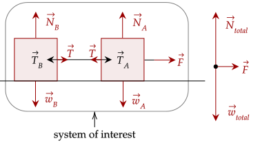
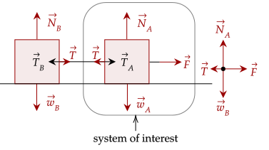
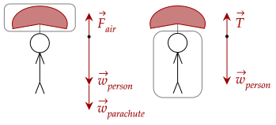
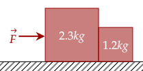
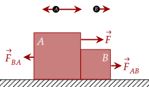
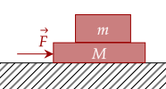
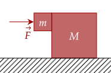

From our previous studies of dynamics, we examined the motion of one object. For example, we examined the forces acting on a block, a box on a string, scales, and other particles that can be treated as one object.
We can extend this approach by simplifying a group of objects as a singular object, wherein the motion of each of its parts is interdependent with each of its other parts.
The system we choose is arbitrary, and we can choose the system that is the most beneficial to us. For example, if we examine two blocks connected by a string, we can choose the system below.

Recall that we draw the free body diagram with all the external forces acting on the system. Here, tension is an internal force. It happens within the system, and thus we don't include it.
Meanwhile, the weight of the two blocks and the two normal forces acting on it are external forces acting on the system, along with the force pulling.
However, since this choice of system to analyze is arbitrary, we could've equally chosen the system below to analyze, focusing on the forces acting on the right block specifically.

One thing to ask is this: how does the acceleration of the entire system affect the acceleration of its parts?
While complicated, here is a basic answer: since the parts don't extend and/or compress, the displacement of each of its individual parts is the same; thus, the velocity of each of the parts is the same, and thus the magnitude of acceleration of each of its parts must also be the same.
Of course, the above assumes that the parts don't extend/compress. In the real world, strings aren't always

We note that the acceleration of −2.5m/s² is on the entire system, and because the parachute and persn doesn't extend or compress, we can assume that the acceleration of each of its parts is also the same.
For the entire system, we have the force of air pushing up and the weight of both objects pulling down.
Substituting in, we have the following value for the force of air. The total mass of the system is 82.2kg.
For the person, it accelerates downward at the same acceleration. The forces acting on it is the weight of the object and the tension of the parachute pulling the person up, which is equal to the tension of the person pulling down.
If you're confused on how to get the magnitudes of certain forces, it might be useful to consult the free body diagrams of the individual parts of the system.

The total mass of the boxes is 3.5kg. We can get the acceleration by Newton's second law.
Both boxes then accelerate at a rate of 0.91m/s². The left box is moved by the force, pushing the right box. By Newton's third law, the right box pushes back at the same magnitude. Drawing the free body diagram shows this clearly.

The force of contact is the only thing pushing the right box. We can calculate it, given the mass of the right box and the acceleration.
We still get the same acceleration of 0.91m/s². However, now we note that the left block is the one that is moved purely by the contact force. Thus, we use its mass now.
The force is larger because the small block has to push much harder to push the more massive block.
The entire toy is affected by the force, so we need the entire mass of the toy. Afterwards, since we are given the force, we can use the Law of Acceleration to get the acceleration.
The whole acceleration is then 0.97m/s².
This means the entire toy (including each of the cars) accelerates at 0.97m/s². The force exerted by the middle car on the leftmost car only has to pull the leftmost car, so the only mass it needs to pull is 1.2kg.
The force of the rightmost car needs to pull both the middle and the leftmost car.
Let's up the complexity a little by adding friction. The fundamental strategy still remains the same, however; choose the system you want to analyze, then analyze how the motion of the system affects each of its parts.

To keep them moving as a single object, the force applied on the top block must not exceed the maximum force of the static friction. Thankfully, we are given this force, being the amount needed to slip which is 12.0N.
Now, we first analyze the acceleration for the whole system. The only force acting on it is just the force pushing as well.
Now, analyzing the top block, the forces balance out.
Substituting in our value for the acceleration gives us this. We now simplify.
We thus get the answer of 27.0N.
One doesn't need to compute anything but note that 12.0N is the maximum force.
We get that the coefficient is just 0.278.

We first analyze the entire system. The force causes the whole system to accelerate. Since the massive block has no friction, the only net horizontal force is the force itself.
Now, we analyze the system of the rightmost block. The force pushing it forward at that acceleration is that of the contact force of the leftmost block.
The two vertical forces acting on the left block is the force of weight, and the force of static friction. Setting weight as negative (going down) and setting the static friction to its maximum strength (which minimizes the normal force) gives us this equation.
From the Law of Interaction, this push of the left block has its corresponding pair, being the normal force. Afterwards, we keep substituting in our old equations until we get an equation with only the magnitude of the force, the coefficient of static friction, and the masses of the two blocks.
Now, we simplify.
Finally, we plug in our values to get the magnitude of the force.